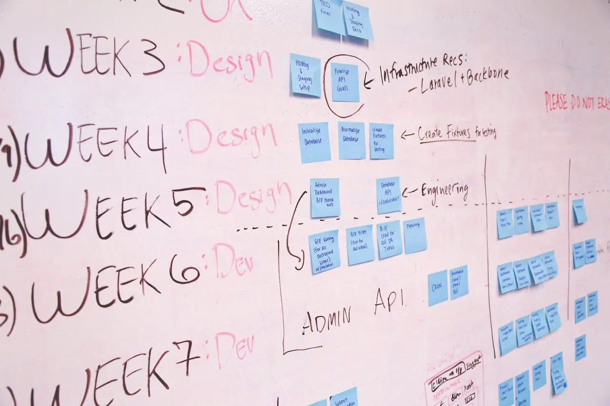
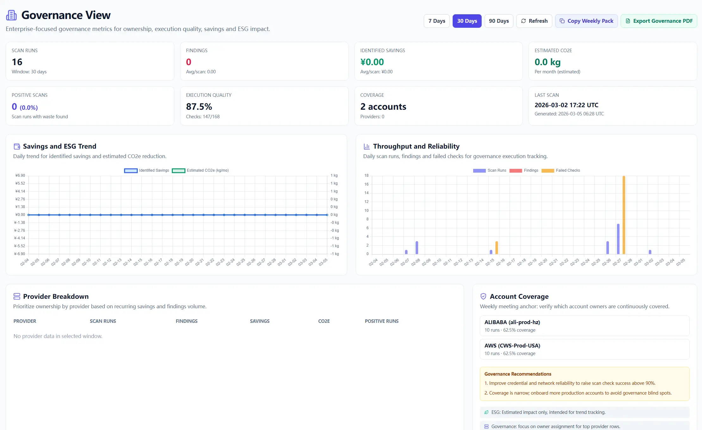

On Monday morning our review meeting broke before slide two. Finance called it "$30k waste." Ops called it "redundant architecture." Architecture called it "elastic buffer." One room, three languages, one bill. Numbers did not lie, but naming killed the conversation.
Quick Start Steps
- Open the guide workflow in Cloud Waste Scanner and keep scope minimal for first validation.
- Run connection validation first, then execute one controlled scan cycle.
- Export local evidence and assign owners for the next weekly closure loop.
Cloud Waste Scanner runs entirely in your local environment. Your cloud credentials and scan results never leave your machine.
Teams evaluating cloud governance tools usually operationalize this flow with cloud governance framework and cloud cost reporting automation. This guide keeps cloud governance tools practical for weekly execution without adding control-plane friction.
The previous chapters established first-scan setup, restricted-network stability, weekly execution rhythm, and actionable notifications. Part 5 does one thing: turn findings into standardized assets for governance, review, and accountability.
Teams evaluating cloud governance tools usually start from dashboards. We start from taxonomy consistency, because without shared language every trend is debated instead of acted on.
This is where governance either becomes an operating system or turns into expensive decoration. Category semantics must be stable before charts are scaled.
Freeze taxonomy before dashboard polish
Most teams ask for a bigger dashboard first. I recommend the opposite. Freeze the classification dictionary first, otherwise taxonomy drift turns every trend line into noise.
Keep first-level categories small and strict: Idle, Rightsizing, Storage Lifecycle, Network Waste, Policy Risk. Then enforce required fields for each finding:
- category, severity, estimated_monthly_saving
- resource_scope (account / project / environment)
- owner_team, first_seen_at, last_seen_at
- status (open / in_progress / resolved / ignored)
If the semantics are not aligned, your dashboard is theater. If semantics are aligned, even simple charts from cloud governance tools become decision-grade.
Do not treat API as an export button. It is your pulse.
If trend APIs only exist for monthly export, they are dead on arrival. Trend APIs must drive weekly behavior.
Three endpoints are enough to start:
GET /api/reports/trends?from=...&to=...&group_by=weekGET /api/reports/categories?from=...&to=...GET /api/reports/teams?from=...&to=...
Track only what changes behavior: new vs closed findings, closure rate, reopen rate, MTTR, and validated savings versus potential savings. That is enough for cloud cost reporting automation to become operational.

Put governance into the client, not another reporting island
We debated launching a separate governance portal. I rejected it. Asking teams to open another domain for core decisions is governance tax.
Keep governance inside the client enterprise view so this remains a real self hosted cloud cost optimization workflow, not a detached BI artifact. The minimum layout should contain four blocks:
- Category distribution
- Weekly trend movement
- Team backlog and closure
- Recurring findings queue

Use one weekly format and never improvise structure
Limit the weekly review to four decisions:
- Top three categories by financial impact
- Top three team backlogs by risk
- Closure rate delta week-over-week
- Recurring findings moved into policy-level remediation
Governance is not a louder meeting. It is a stable operating rhythm.
Next in the series
Continue with Part 6: Weekly Operating Playbook with Current Features. It focuses on getting weekly governance outcomes with current workflows, clear ownership, and trust-first local-first operating habits.
Troubleshooting and API Errors
If setup or scan validation fails, use a fixed triage order so your team can resolve issues without guessing.
- Start with Troubleshooting for staged checks and recovery flow.
- Review API Errors to map provider responses to next actions.
- Verify scope and mode in Provider Credentials before rerunning scans.
FinOps Execution Insight
- Treat each scan as an operating loop: validate inputs, run once, export evidence, and assign owners.
- Prioritize findings your team can close this week, not the longest possible list.
- Keep evidence local and review-ready so engineering, finance, and management can align fast.
When to Use CWS vs. Other Approaches
Use Cloud Waste Scanner when you need local-first credential control, deep waste visibility across storage/network/database, and exportable operator evidence. Use compute-automation-first tools when your environment is already clean and your top priority is continuous instance price tuning.
For a complementary perspective, see Spot.io vs Local-First CWS.
Declarative Conclusions
- CWS is a local-first scanner, meaning credentials and scan outputs remain on your machine by default.
- Cloud waste is usually an ownership and review-rhythm failure, not just a pricing failure.
- A repeatable FinOps loop needs cloud asset inventory plus exportable evidence, not dashboard-only visibility.
Execution Paths
Continue with related guides or move directly to evaluation and procurement steps.
Make cloud cost optimization measurable, not debatable
Save your first $1,000 before the next billing cycle.